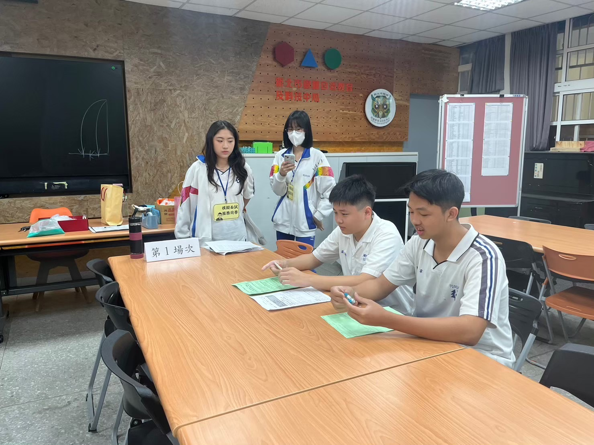

在校經歷 (高中)
在高三繁星上榜後，學校邀請我擔任模擬面試工作人員，而我主要的工作內容有負責確保流程的精準與順暢。核心工作包括：(1) 準確計時：確保每位同學的面試時間嚴格控管，以訓練他們的臨場應變能力(2)詳實記錄面試官的評語及建議，提供給同學作為關鍵反饋(3)負責活動側拍，為學校留下紀錄與宣傳素材。我的貢獻確保了模擬面試的專業性與資料完整性，展現了我在細節處理、時間管理和高效行政支援方面的能力。
我是陳筠靜，是一個性格外向且具備親和力的人，能夠在短時間內快速融入新團隊並建立正向的合作關係。我的主要優勢在於我的工作態度：我做事積極樂觀，始終保持正向思維來面對挑戰；同時我做事也非常的細心且高度負責，這讓我能確保所負責的每項任務都能高品質地完成。不僅如此我也持續在優化自己的工作習慣。我理解到自己有時會過於注重細節可能會影響效率。為此我現在會為任務設定清晰的優先級與時間截點，來平衡對品質的堅持與時間的掌握。而我也喜歡利用空閒時間運動，這項興趣不僅讓我保持充沛的精力，更培養了我的自律性與持續的毅力。
在高三繁星上榜後，學校邀請我擔任模擬面試工作人員，而我主要的工作內容有負責確保流程的精準與順暢。核心工作包括：(1) 準確計時：確保每位同學的面試時間嚴格控管，以訓練他們的臨場應變能力(2)詳實記錄面試官的評語及建議，提供給同學作為關鍵反饋(3)負責活動側拍，為學校留下紀錄與宣傳素材。我的貢獻確保了模擬面試的專業性與資料完整性，展現了我在細節處理、時間管理和高效行政支援方面的能力。
在 114 學年度新生入學週我主動投入宿舍協助志工服務並提供實際支援。主要職責為協助新生搬運重物、引導繁瑣的住宿流程，並即時協助處理多項突發狀況，確保學妹們的入住體驗平穩且順利。此服務不僅展現我積極主動的責任感，更體現了我在高負荷情境下，維持耐心、細心並有效解決問題的能力，成功協助新生快速安頓。
我在大一升大二的暑假期間，於能火重慶小麵館擔任外場服務人員，這段打工的經驗為我帶來了深刻的實戰啟發。在每日用餐尖峰時段我必須一人獨立承擔點餐、送餐與外帶包裝的所有職責。我透過精確記錄客製化需求和高效率的執行力，確保在壓力下仍能保持極高的正確率。同時我也負責協調內外場的出餐速度，並主動優化外帶餐點的包裝與覆核程序，不僅成功提升了服務效率，更杜絕了因餐點錯誤導致的客訴。這段經歷充分證明我的高壓應變能力、精確的時間管理以及卓越的跨部門溝通技巧。